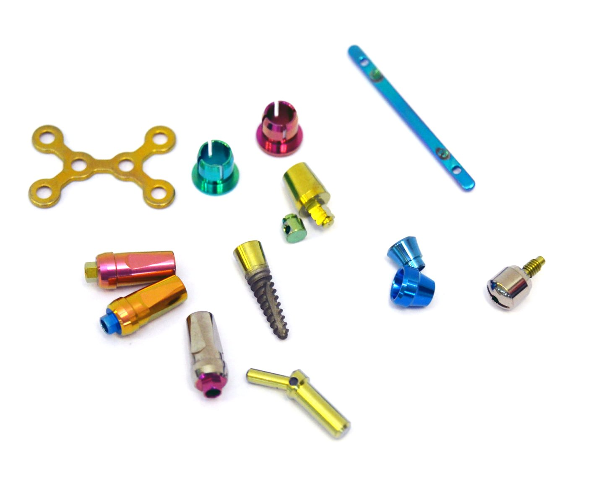
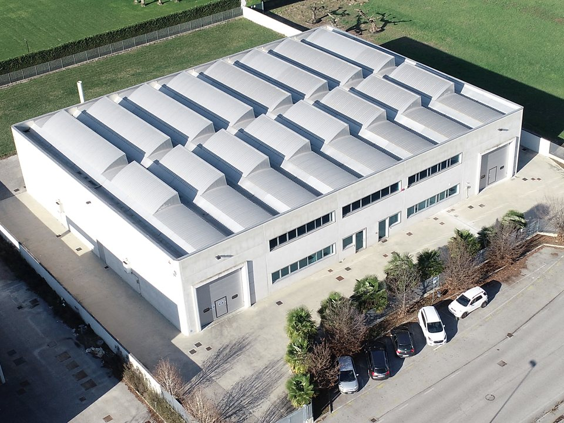

Ossidazione anodica
Titanio e alluminio, poi passivazione, brillantatura e sabbiatura, su minuteria di precisione per il medicale e l'industria. Il reparto è a Tombelle di Vigonovo, in provincia di Venezia.

Antonio Bertolin è un'officina metalmeccanica. Ha cominciato costruendo materiale rotabile per metropolitane, tram, filobus e Ferrovie dello Stato, poi particolari meccanici su specifica del cliente. Oggi ha in casa anche i trattamenti di superficie, a cominciare dall'ossidazione anodica di alluminio e titanio.
Per chi lavoriamo. Minuteria per il medicale e il dentale, l'aeronautico, il navale, l'automotive, la moto e la bici. Pezzi per la moda e l'arredamento, dove l'alluminio colorato conta anche per come si vede.
Sei trattamenti, tre metalli
Il pezzo è in , o ?
-
Ossidazione anodica del titanioTitanio
Colore senza vernice né pigmento, su tutto il pezzo o solo in parte. Serve anche a riconoscere i pezzi, alla biocompatibilità e contro il grippaggio.
0–400 nmdi ossido
-
Ossidazione anodica dell'alluminioAlluminio
Naturale oppure nero, rosso, blu e oro. Su finitura lucida, opaca o satinata.
5–20 microndi strato
-
Type II, ossidazione duraTitanio
Antigrippante e lubrificante. Per l'aeronautico, il navale, il medicale e i pezzi che lavorano in acqua di mare.
Grigio scurocolore della superficie
-
BrillantaturaTitanio
Toglie bave e spigoli vivi e lascia la superficie brillante, con un'alta resistenza alla corrosione.
-
PassivazioneTitanio e acciaio
In acido citrico oppure nitrico, secondo il materiale del pezzo.
Citrico o nitricosecondo il materiale
-
Sabbiatura e micropallinaturaAlluminio, titanio e acciaio
Lavoro meccanico e manuale che erode lo strato più superficiale del metallo, anche su minuteria.
Sul titanio il colore è uno spessore
L'ossido cresce da 0 a 400 nanometri e la luce, riflessa sopra e sotto lo strato, arriva all'occhio come oro, blu, rosa o verde. Nessuna vernice: le misure del pezzo non cambiano in modo sostanziale.

Sull'alluminio il colore è un pigmento

- Nero
- Blu
- Oro
- Rosso
- Naturale
Lo strato va da 5 a 20 micron. Oltre al naturale ci sono il nero, il rosso, il blu e l'oro, su una finitura lucida, opaca o satinata.

2018
A luglio l'officina si è allargata e ha installato l'impianto di ossidazione anodica dell'alluminio e del titanio.
Viale Serenissima 15, Tombelle di Vigonovo
Zona artigianale, 30030 Vigonovo (VE)
049 503240Per un preventivo mandate disegno, materiale e quantità a info@bertolinantonio.it.